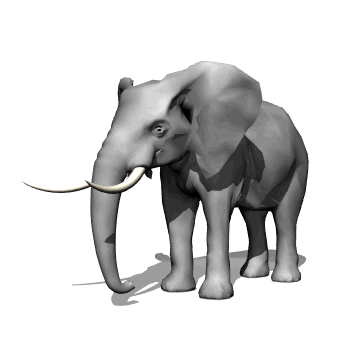
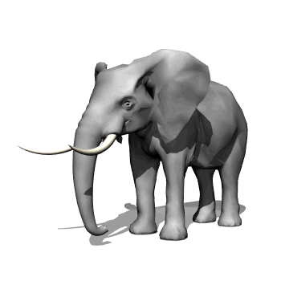
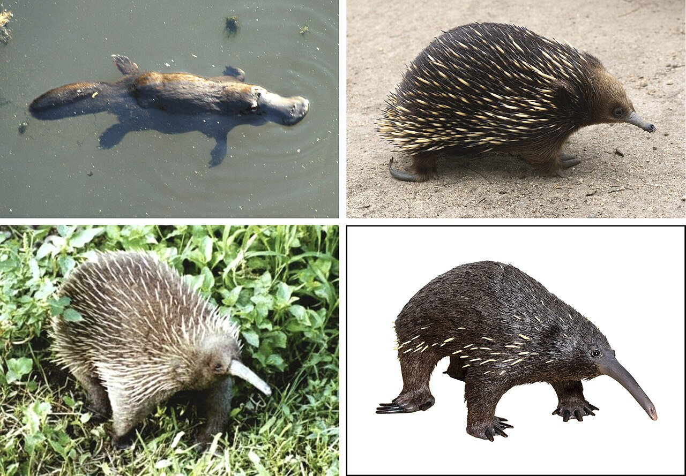

Los animales vertebrados son aquellos que poseen un esqueleto interno formado por huesos, incluyendo una columna vertebral.
Este grupo esta conformado por:
Mamíferos: Los mamíferos son una clase de vertebrados caracterizados por la presencia de glándulas mamarias que producen leche para alimentar a sus crías. Además, tienen pelo o pelaje. Ejemplos de algunos mamíferos son: los humanos, los perros y los elefantes.
 

Este grupo es conocido por su inteligencia y capacidades avanzadas de socialización. Los mamíferos tienen sistemas sensoriales altamente desarrollados y son capaces de adaptarse a una amplia variedad de entornos.
Está dividida en tres órdenes: los monotremas, marsupiales y placentarios.
Veamos el siguiente video para reforzar lo aprendido sobre los animales mamíferos:
Actividad:
Reunidos en plenario: analicemos las características de los animales mamíferos y su clasificación.
Aves: Las aves son vertebrados que se caracterizan por tener plumas, un pico sin dientes y la capacidad de poner huevos con cáscaras duras. La mayoría de las aves pueden volar, aunque hay excepciones como los pingüinos y las avestruces.
Las aves tienen un sistema respiratorio único que les permite un intercambio de gases eficiente, lo cual es crucial para el vuelo. Además, su visión es altamente desarrollada, permitiéndoles detectar presas y obstáculos a grandes distancias.

Veamos el siguiente video para reforzar lo aprendido sobre las Aves:
Actividad:
Reunidos en plenario: analicemos las características de las aves.
Reptiles: son vertebrados que tienen la piel cubierta de escamas y respiran a través de pulmones.
Veamos el siguiente video para reforzar lo aprendido sobre los Reptiles:
Actividad:
Reunidos en plenario: analicemos las características de los reptiles.
Anfibios: Tienen una piel húmeda y permeable, suelen pasar una parte de su vida en el agua.
Veamos el siguiente video para reforzar lo aprendido sobre los animales Anfibios:
El grupo reptiles y anfibios muestran una gran diversidad de formas y tamaños, han desarrollado adaptaciones específicas para sus hábitats. Los reptiles son generalmente ectotérmicos, lo que significa que su temperatura corporal depende del ambiente externo.
Actividad:
Reunidos en plenario: analicemos las características de los anfibios.
Peces: son vertebrados acuáticos que respiran a través de branquias y tienen aletas en lugar de extremidades, son extremadamente diversos y se encuentran en casi todos los ambientes acuáticos, desde ríos y lagos hasta los océanos más profundos. Su adaptabilidad les ha permitido sobrevivir en condiciones ambientales muy variadas. 
Esta divido en tres grupos principales de peces:
Veamos el siguiente video para reforzar lo aprendido sobre los Peces:
Actividad:
Reunidos en plenario: analicemos las características de los peces y su clasificación.
Zebra
Gato
Murciélago
Conejo
Lobo
Caballo
Mono
Oso
Tigre
Pantera
Ballena
Delfin
Foca
el orden de los mamíferos monotremas está conformado por solo cinco especies de animales: los ornitorrincos y los equidnas. Estos mamíferos se caracterizan por ser animales ovíparos, es decir, ponen huevos. Además, conservan una característica de sus antepasados reptilianos, la cloaca, donde convergen tanto el aparato digestivo como el urinario y el reproductor.

a pesar de ser animales vivíparos, los mamíferos marsupiales se caracterizan por tener un desarrollo placentario muy corto, que se completa en el exterior del útero materno pero dentro de una bolsa de piel llamada "marsupio", dentro de la cual se encuentran las glándulas mamarias.
Estos animales, también vivíparos, completan el desarrollo fetal dentro del útero materno, al salir de él, dependen totalmente de su madre, la cual le proporcionará la protección y el alimento que necesitará durante los primeros meses o años de vida, la leche materna.
Pato
Gaviota
Águila
Pájaro Carpintero
Loro
Cuervo
Pelicano
Tucán
Halcón
Lechuza
Colibrí
Paloma
Gallo
Cocodrilo
Serpiente
Iguana
Lagarto
Salamandra
Rana
tienen un esqueleto formado por huesos y estos recubren la parte externa de las branquias, tienen una estructura llamada opérculo, que les sirve para protegerse.
Algunos ejemplos de peces óseos son:
Anguila Europea
Tilapia
Trucha
Merluza
Lucio
La mayor características de estos peces es que su cuerpo está formado por cartílagos y no presentan ni un solo hueso. Además, tienen la parte exterior de las branquias (hendiduras branquiales) expuestas. Algunos ejemplos de esta especie de peces son:
Las quimeras
Tiburón
Manta Rayas
son todos aquellos peces que carecen de mandíbulas. Ejemplos de estos peces tenemos:
El Salmón
La Lamprea